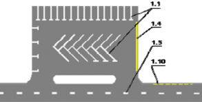
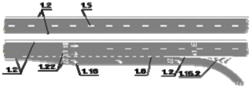
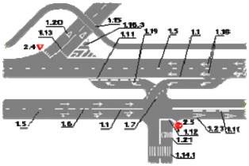
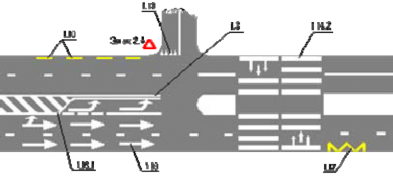
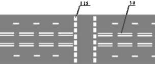
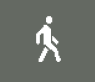
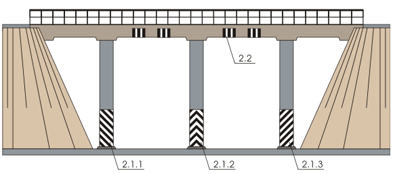
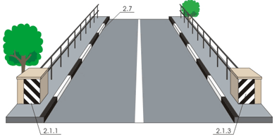
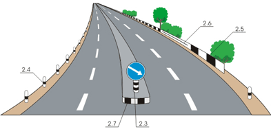

Горизонтальная разметка (линии, стрелы, надписи и другие обозначения на проезжей части) устанавливает определенные режимы и порядок движения либо содержит иную информацию для участников дорожного движения.
Горизонтальная разметка может быть постоянной или временной. Постоянная разметка имеет белый цвет, кроме линий 1.4, 1.10 и 1.17 желтого цвета, временная - оранжевый цвет.
1.1 - разделяет транспортные потоки противоположных направлений и обозначает границы полос движения в опасных местах на дорогах; обозначает границы проезжей части, на которые въезд запрещен; обозначает границы стояночных мест транспортных средств;

(сплошная линия) - обозначает край проезжей части;
(прерывистая линия, у которой длина штрихов в 2 раза короче промежутков между ними)
- обозначает край проезжей части на двухполосных дорогах";
- разделяет транспортные потоки
противоположных направлений на дорогах, имеющих четыре полосы движения и более;
- обозначает места, где запрещена остановка. Применяется самостоятельно или в сочетании со знаком 3.27 и наносится у края проезжей части или по верху бордюра;

1.5- разделяет транспортные потоки противоположных направлений на дорогах, имеющих две или три полосы; обозначает границы полос движения при наличии двух и более полос, предназначенных для движения в одном направлении;
(линия приближения - прерывистая линия, у которой длина штрихов в 3 раза превышает промежутки между ними) - предупреждает о приближении к разметке 1.1 или 1.11, которая разделяет транспортные потоки противоположных или попутных направлений;
(прерывистая линия с короткими штрихами и равными им промежутками) - обозначает полосы движения в пределах перекрестка;
(широкая прерывистая линия) - обозначает границу между полосой разгона или торможения и основной полосой проезжей части (на перекрестках, пересечениях дорог на разных уровнях, в зоне
автобусных остановок и тому подобное);

- обозначает границы полос движения, на которых осуществляется реверсивное регулирование; разделяет транспортные потоки противоположных направлений (при выключенных реверсивных светофорах) на дорогах, где осуществляется реверсивное регулирование;
- обозначает места, где запрещена
стоянка. Применяется самостоятельно или в сочетании со знаком 3.28 и наносится у края проезжей части или по верху бордюра;
- разделяет транспортные потоки противоположных или попутных направлений на участках дорог, где перестроение разрешено только из одной полосы; обозначает места, предназначенные для разворота, въезда и выезда со стояночных площадок и тому подобного, где движение разрешено только в одну сторону;

(стоп-линия) - указывает место, где водитель должен остановиться при наличии знака 2.5 или при запрещающем сигнале светофора (регулировщика);
- указывает место, где водитель должен при необходимости остановиться уступая дорогу транспортным средствам, движущимся по пересекаемой дороге;
1.14.1, 1.14.2 ("зебра") - обозначает пешеходный переход; стрелы разметки 1.14.2 указывают направление движения пешеходов.
1.15 - обозначает место, где велосипедная дорожка пересекает проезжую часть;
1.16.1, 1.16.2, 1.16.3 - обозначает направляющие островки в местах разделения или слияния транспортных потоков;
- обозначает остановки маршрутных транспортных средств и стоянки такси;
- указывает разрешенные на перекрестке направления движения по полосам. Применяется самостоятельно или в сочетании со знаками 5.15.1, 5.15.2;
разметка с изображением тупика наносится для указания того, что поворот на ближайшую проезжую часть запрещен;
разметка, разрешающая поворот налево из крайней левой полосы, разрешает и разворот;
- предупреждает о приближении к сужению проезжей части (участков, где уменьшается количество полос движения в данном направлении) или к линиям разметки 1.1 или 1.11, разделяющим транспортные потоки противоположных направлений. В первом случае разметка
может применяться в сочетании со знаками 1.20.1 - 1.20.3;
- предупреждает о приближении к разметке 1.13;
(надпись "СТОП") - предупреждает о приближении к разметки 1.12, когда она применяется в сочетании со знаком 2.5;
- указывает номер дороги (маршрута);
- обозначает специальную полосу для маршрутных транспортных средств;
- обозначает пешеходную дорожку или пешеходную сторону велопешеходной дорожки;
- обозначает велосипедную дорожку, велосипедную сторону велопешеходной дорожки или полосу для велосипедистов;
 1.24.1-1.24.4 - дублирует соответствующие дорожные знаки и применяется совместно с ними; Разметка 1.24.4 может применяться самостоятельно; 1.25 - обозначает искусственную неровность на проезжей части Линии 1.1, 1.2.1, 1.3 пересекать запрещается. Линию 1.2.1 допускается пересекать для остановки транспортного средства на обочине и при выезде с нее в местах, где разрешена остановка или стоянка . Линии 1.2.2, 1.5, 1.6, 1.7, 1.8 пересекать разрешается с любой стороны. Линию 1.9 при отсутствии реверсивных светофоров или когда они отключены разрешается пересекать, если она расположена справа от водителя; при включенных реверсивных светофорах - с любой стороны, если она разделяет полосы, по которым движение разрешено в одном направлении. При отключении реверсивных светофоров водитель должен немедленно перестроиться вправо за линию разметки 1.9; Линию 1.9, разделяющую транспортные потоки противоположных направлений, при выключенных реверсивных светофорах пересекать запрещается. Линию 1.11 разрешается пересекать со стороны прерывистой, а также со стороны сплошной, но только при завершении обгона или объезда. В случаях когда значения дорожных знаков, в том числе временных (размещаемых на переносной опоре), и линий горизонтальной разметки противоречат друг другу либо разметка недостаточно различима, водители должны руководствоваться дорожными знаками. |
Вертикальная разметка в виде сочетания черных и белых полос на дорожных сооружениях и элементах оборудования дорог показывает их габариты и служит средством зрительного ориентирования. |

2.1.1-2.1.3 - обозначает элементы дорожных сооружений (опор мостов, путепроводов, торцевых частей парапетов и тому подобного), когда эти элементы представляют опасность для движущихся транспортных средств;

- обозначает нижний край пролетного строения тоннелей, мостов и путепроводов;
- обозначает круглые тумбы, установленные на разделительных полосах или островках безопасности;
- обозначает направляющие столбики, надолбы, опоры ограждений и тому подобное;

- обозначает боковые поверхности ограждений дорог на закруглениях малого радиуса, крутых спусках, других опасных участках;
- обозначает боковые поверхности ограждений дорог на других участках;
- обозначает бордюры на опасных участках и возвышающиеся островки безопасности.